Building trust to foster long term customer relationships
Fibo is a personal financial assistant that answers customers' questions, helps them manage long term goals, and connects them to financial specialists. Fibo encourages and nurtures long term relationships between customers and their bank, providing four key benefits for customers: ease and convenience of service, personalized insights, recognition for their efforts, and long term planning.
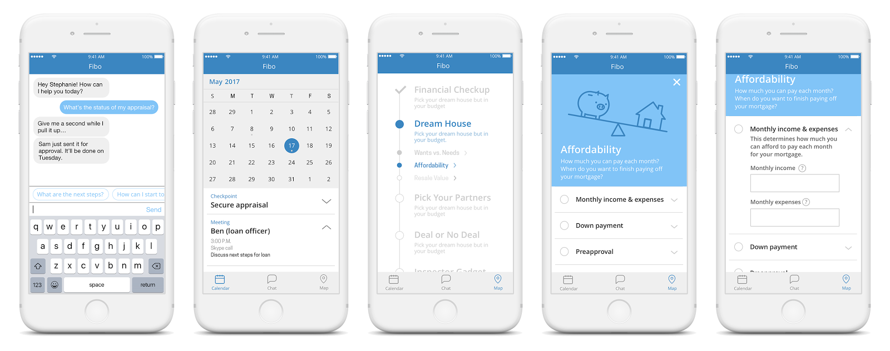Scope and Research
A client in the financial sector was looking to increase their wallet share and strengthen long term relationships with mass affluent customers. Typical mass affluent customers perks include preferred interest rates and waived fees, but the client wanted an offering that would differentiate them from their competitors and help customers understanding how to maximize the benefits of an expanded relationship.
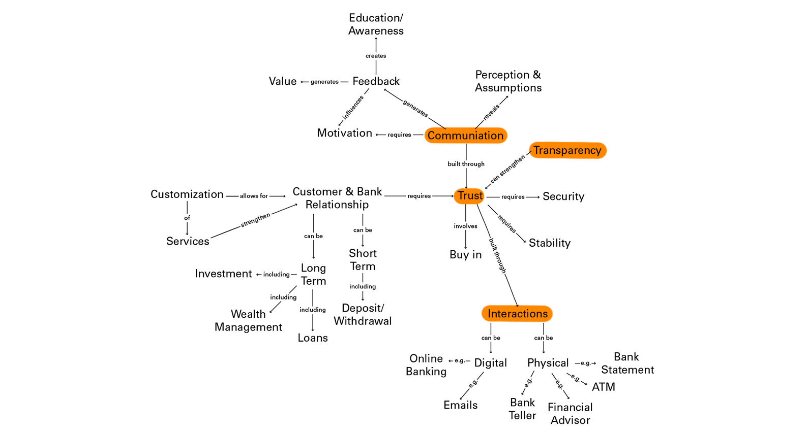My team and I began by visualizing aspects present in a relationship between an individual and bank, narrowing in on facilitating interactions where the bank can offer transparent communications to build trust with the customer. We also used a conceptual blockbusting exercise with different stakeholders and 4MAT to catalog customer priorities.
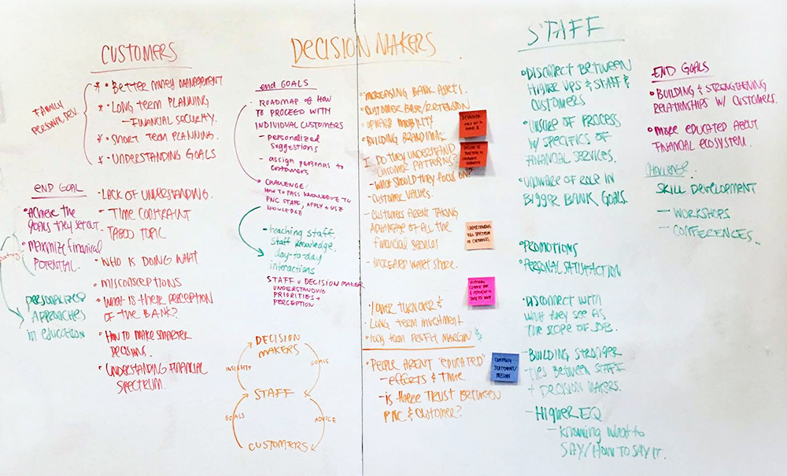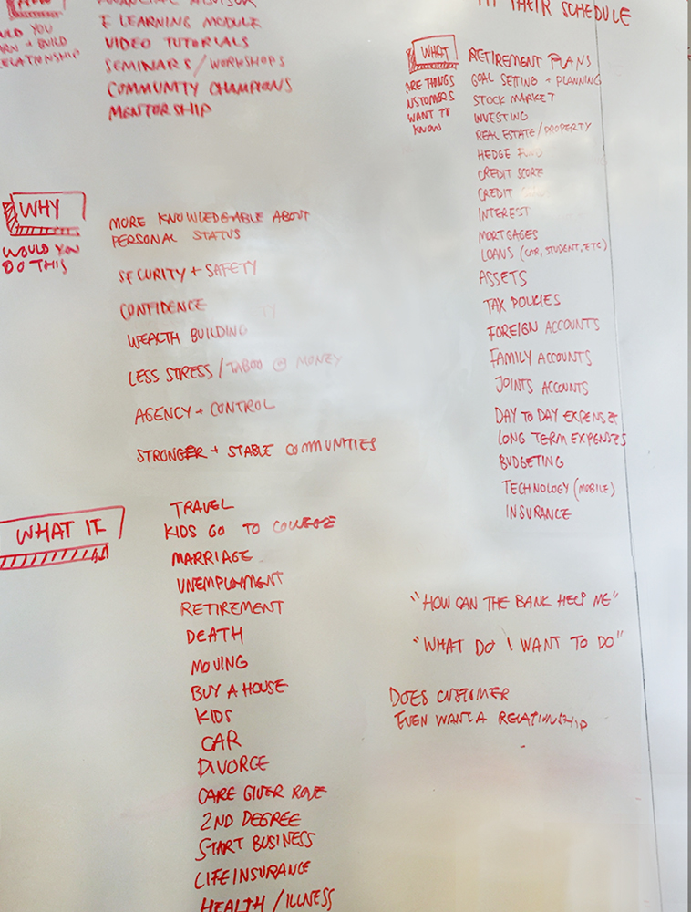 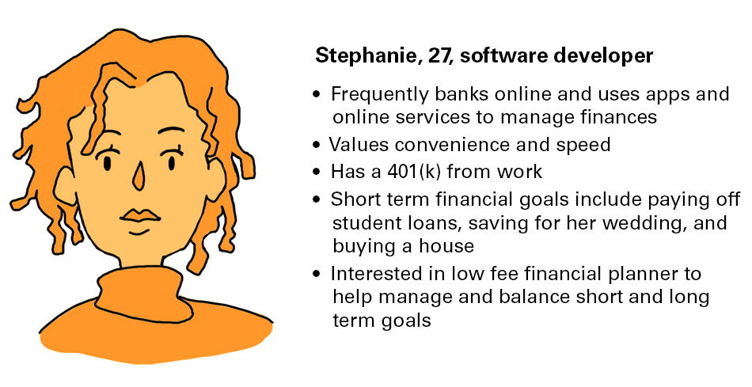 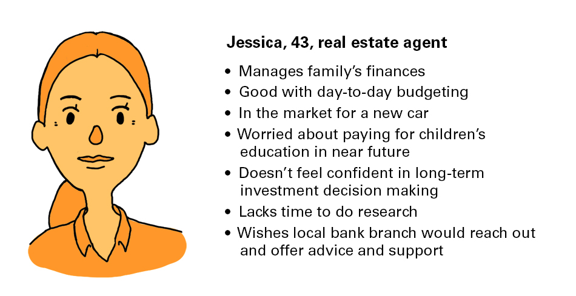 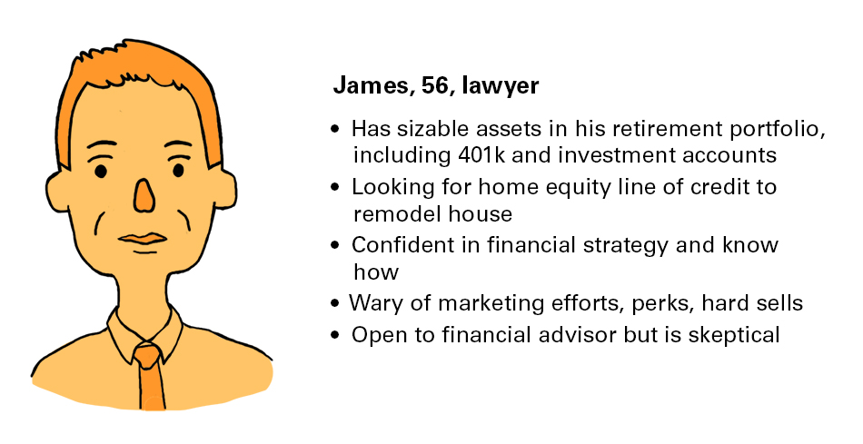Based on the above personas and the research provided by the client, we identified three hypotheses regarding mass affluent customers:
1. Customers don’t always feel comfortable asking questions or for help.
They many not want to appear uninformed or may be unaware of their information gap and, as a result, do not ask for help.
2. Customers lead busy lives and don’t always dedicate time for long term financial planning.
Many customers are experts at day to day budgeting but find long term planning intimidating or time consuming.
3. Customers have trouble starting and sticking to long term goals.
Customers may be discouraged or intimidated by large goals. Not knowing where to start, they often give up before even starting.
Ideation and Iteration
As we finished up research, we decided that convenience and flexibility are key; our solution needed to easy and painless to use and be able to accommodate a different knowledge levels, learning styles, and life goals. We focused on helping customers achieve their long term goals; the financial institution can build a relationship based on trust by helping customers grow their knowledge and achieve their goals.
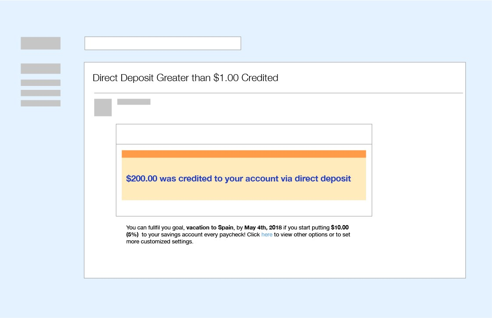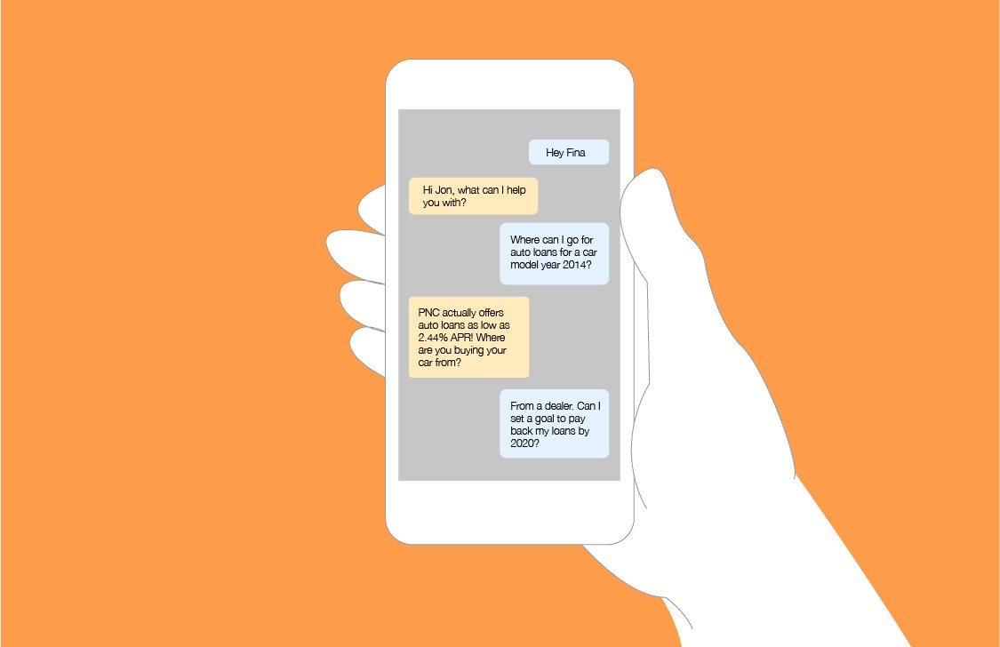
We chose to build a virtual assistant to account for customers' different goals, life stages, prior knowledge, and more. Early medium iterations included an email based coach, a financial personality test, and a voice based advisor. We chose a conversational interface for familiarity. A chatbot also affords convenience— customers can have their questions answered quickly, whenever and wherever— and safety— customers can ask a bot any question without fear of judgment.
In our main use case, Fibo helps Stepahnie create a plan for home ownership. Fibo provides a list of actionable goals and prepares her with relevant information before she speaks to her bank. After buying a home, Stephanie uses Fibo to help her manage her mortgage payments.
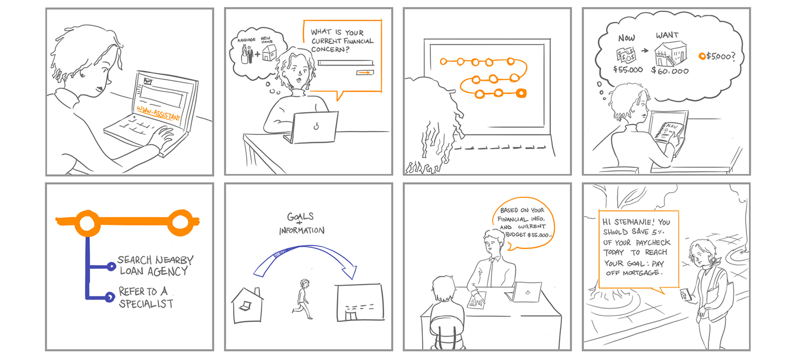 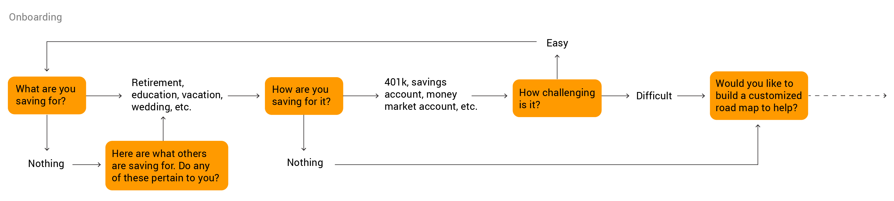After presenting our concept to the client, they like the convenience factor but were interested to see how Fibo could potentially play a role in human to human interactions.
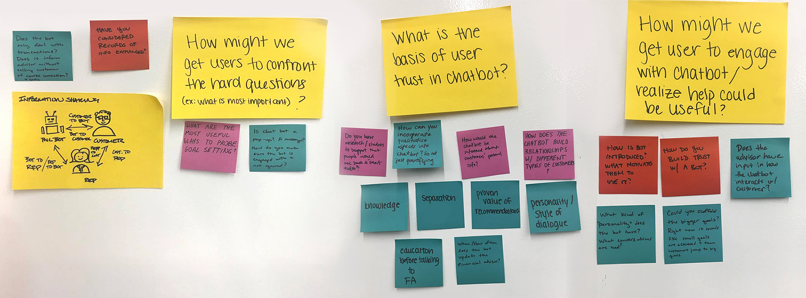We shifted our focus to having Fibo facilitate in person interactions; sometimes it's better for the customer to interact with a human. Customers might not know when to contact specialists or feel intimidated or unprepared for hard conversations. In addition providing financial readiness, Fibo can share information between customers and specialists, streamlining the onboarding process.
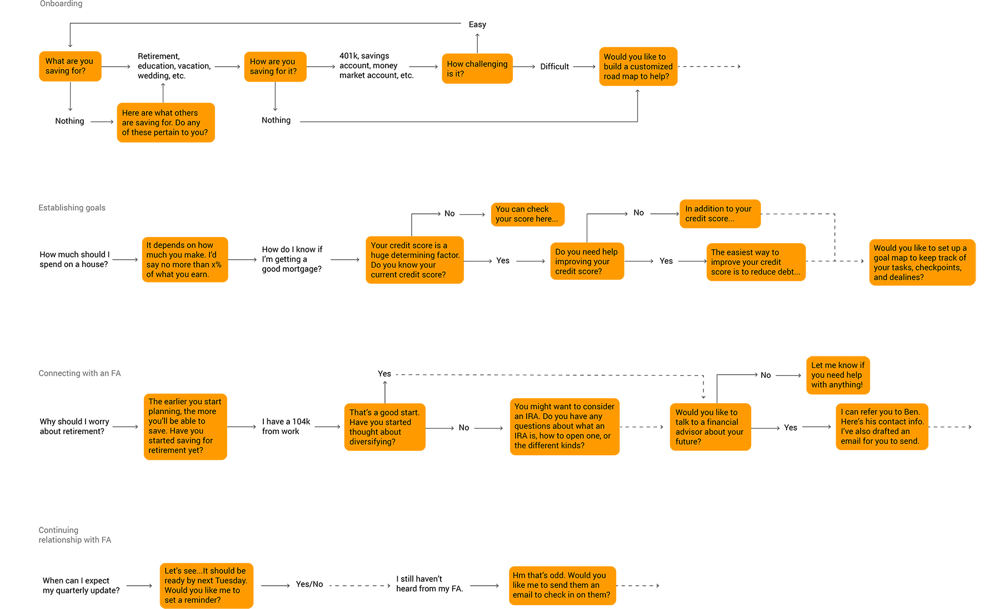The final app exists both on tablet and mobile. Fibo streamlines communication between the customer and the institution, connecting customers with specialists. Pre-drafted email messages makes the process easy and painless. Convenient and open lines of communication encourages customers to actively engage with their bank.
The goal map, customized with the customer's needs, lays out all the steps in front of the customers, preparing them for any challenges that may arise. Information entered can be shared bank personnel to streamline applications.